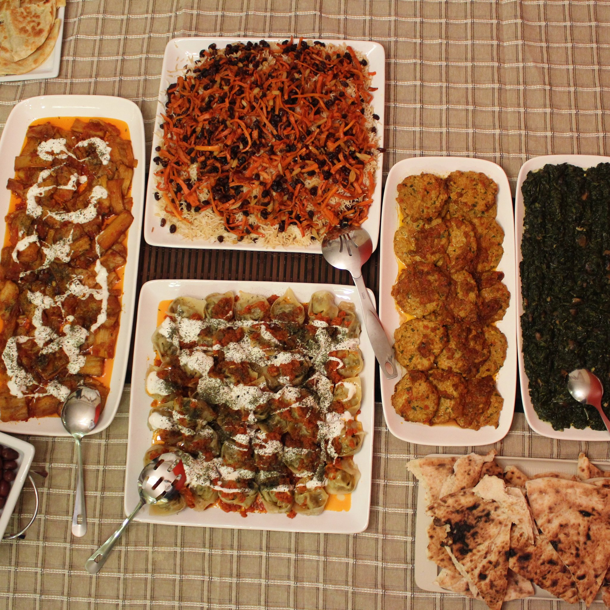
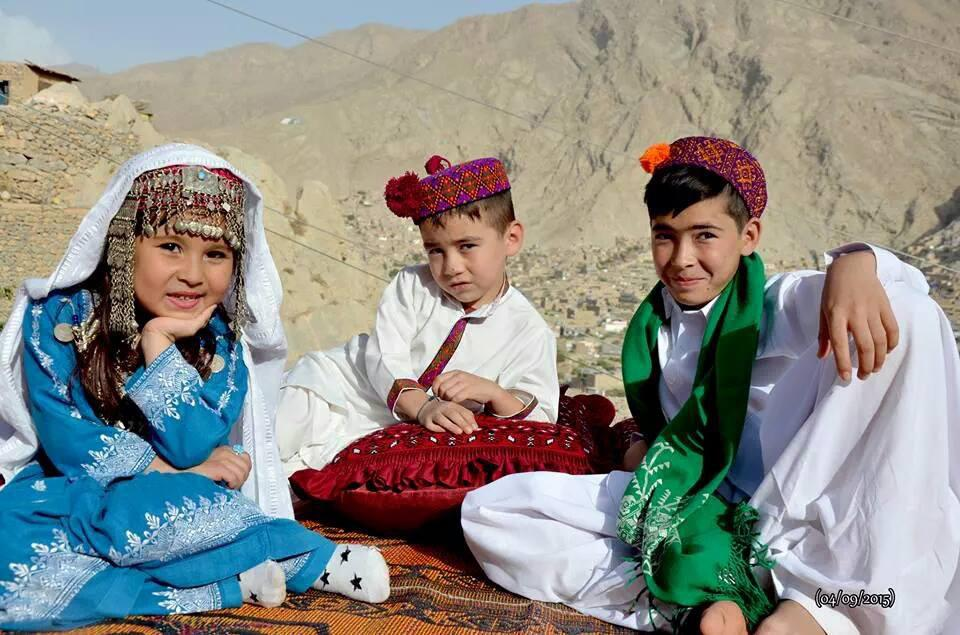

Ghazni
Ghazni's culture is a blend of historical influences, with the city once being a center for Buddhist and Hindu religions before the rise of Islam. The Ghaznavid dynasty, a significant period in Ghazni's history, integrated Persian and Turkish traditions, establishing a center of Arabic learning and Persian culture. Ghazni's culture also reflects its location as a crossroads of Iranian, Central Asian, and Indian regions, making it a center of trade and cultural exchange. During the pre-Islamic period, the area was inhabited by various tribes who practiced different religions including Zoroastrianism, Buddhism and Hinduism. Arab Muslims introduced Islam to Ghazni in the 7th century and were followed in the 9th century by the Saffarids.
Traditional food
Ghazni is known for its Afghan culinary traditions, with dishes like Kabuli Pulao, Bolani, and Mantu being popular choices. Kabuli Pulao, a fragrant rice dish with lamb, carrots, and raisins, is considered a national dish in Afghanistan. Bolani is a stuffed flatbread with various fillings, often served with yogurt. Mantu are dumplings filled with minced meat, served with yogurt and tomato sauce. Other dishes include Burani Banjan (eggplant with yogurt), Kofta Kebab (ground meat kabobs), and a variety of stews and soups.
Traditional clothes
In Ghazni, Afghanistan, traditional clothing typically includes long, loose-fitting garments, including trousers (tombaan), a long dress or shirt (perahan), and a head covering (chador for women and a hat or cap for men). Women's traditional attire often includes a pleated skirt with an undergarment, a calf-length shirt, and a chador that can be decorated with ornaments. Men's attire includes trousers, an overshirt, and a hat or cap. Ghazni was also known for its production of pustins (sheepskin coats), which were popular for their warmth and status
traditional culture

Ghazni's traditional culture is a blend of Persian, Islamic, and indigenous influences, with a strong emphasis on Nowruz celebrations and the preservation of handicrafts like fur tailoring and carpet weaving. The province's history as a center for Buddhism and Islam, along with its rich cultural heritage, is reflected in its art, architecture, and traditions.